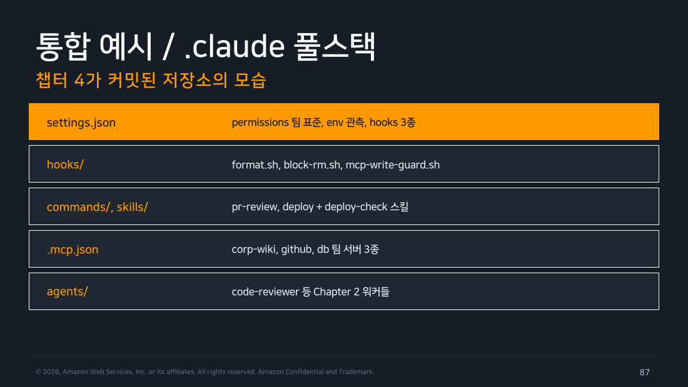
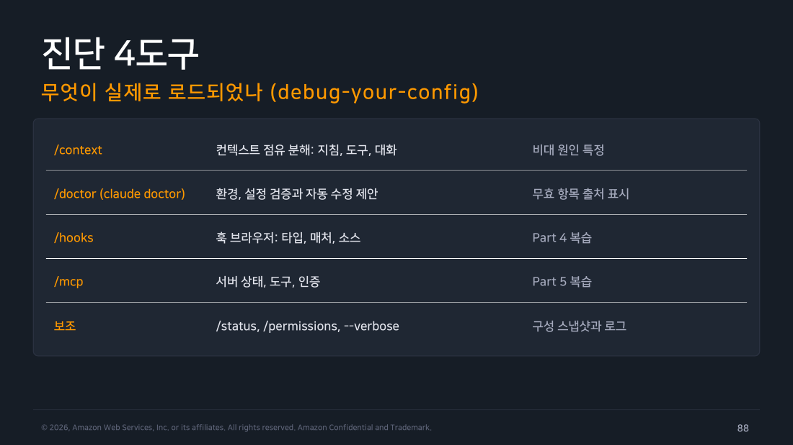

Part 8 — 통합과 트러블슈팅 (+ 정리와 Lab 4종)¶
한 줄 요약¶
이 챕터가 다룬 여섯 조각(Settings·Permissions·Hooks·MCP·Commands·Skills)은 결국 한 저장소의 .claude/와 루트의 .mcp.json(Part 5에서 다룬 대로 MCP 프로젝트 설정만 .claude/ 밖에 있습니다) 안에서 동시에 맞물려 삽니다. 문제가 생겼을 때는 진단 4도구(/context, /doctor, /hooks, /mcp)로 "무엇이 실제로 로드됐는가"부터 확인하는 게 첫 걸음입니다.
1. 통합 예시 — Chapter 4가 커밋된 저장소의 모습¶
이 챕터에서 다룬 조각들이 실제 저장소에서는 이렇게 공존합니다.
settings.json— 팀 표준permissions, 관측용env, 세 가지 훅 등록.hooks/—format.sh(Part 4 Recipe 1),block-rm.sh(Recipe 2),mcp-write-guard.sh(Part 6).commands/,skills/—pr-review명령,deploy명령,deploy-check스킬..mcp.json—corp-wiki,github,db같은 팀 공유 서버 정의.agents/— 2주차에서 다룬code-reviewer등의 서브에이전트 워커.
즉 "이 저장소를 클론하는 순간 팀 표준이 그대로 서는 것"이 이 챕터 전체가 지향하는 목표입니다.

▲ 교재 슬라이드 87 — 통합 예시 / .claude 풀스택
2. 진단 4도구 — 무엇이 실제로 로드되었나¶
문제가 생겼을 때 가장 먼저 열어볼 네 가지 도구입니다.
/context— 컨텍스트 점유를 지침·도구·대화로 분해해 비대 원인을 특정합니다(Part 5에서 이미 실측)./doctor(claude doctor) — 환경과 설정을 검증하고 자동 수정을 제안하며, 무효 항목의 출처까지 표시합니다./hooks— 훅 브라우저로 타입·매처·소스를 보여줍니다(Part 4에서 이미 다룸)./mcp— 서버 상태·도구·인증을 보여줍니다(Part 5에서 이미 다룸).
보조로는 /status, /permissions, --verbose가 구성 스냅샷과 로그를 보여줍니다.

▲ 교재 슬라이드 88 — 진단 4도구
3. 설정이 안 먹을 때 — 우선순위와 스코프의 이분 진단¶
flowchart TD
P["설정이 반영 안 되는 것 같다"]
P --> S1["1. /doctor로 파일 유효성 확인"]
S1 --> S2["2. /status, /permissions로<br/>이 값이 어느 스코프에서 왔는지 확인"]
S2 --> S3{"3. 상위 스코프에<br/>같은 키가 있는가?"}
S3 -->|"예"| WIN["상위 스코프 값이 이긴 것<br/>(Part 1 우선순위 5단)"]
S3 -->|"아니오"| S4{"4. model/effortLevel/<br/>outputStyle인가?"}
S4 -->|"예"| RESTART["/model·/effort·/clear 필요<br/>(Part 1 예외 세 키)"]
S4 -->|"아니오"| BARE["그래도 안 되면<br/>새 터미널 + --bare로 최소 기동 후<br/>하나씩 복원하며 이분 탐색"]
style P fill:#673ab7,stroke:#4527a0,stroke-width:3px,color:#fff
style WIN fill:#e8f5e9,stroke:#388e3c,color:#000
style RESTART fill:#e3f2fd,stroke:#1976d2,color:#000
style BARE fill:#fff3e0,stroke:#ef6c00,color:#000이 흐름은 이 챕터에서 이미 다룬 사실 두 가지(Part 1의 우선순위·리로드 예외)를 진단 순서로 재배열한 것뿐입니다 — 그래서 Part 1을 정확히 이해했다면 이 흐름표 없이도 원인을 찾을 수 있어야 합니다.
4. Hooks·MCP 트러블슈팅 — 증상에서 원인으로¶
훅이 이상하게 동작할 때 흔한 원인은 이렇습니다.
- 안 발화함 — 매처 불일치나 이벤트를 잘못 골랐을 가능성.
/hooks로 등록 상태와 매처를 확인합니다. mcp__server매처가 안 걸림 — Part 3에서 다룬 대로 정확 문자열로 해석되기 때문입니다.__.*접미를 추가해야 합니다.- 차단이 안 됨(HTTP 훅) — 비2xx 응답은 비차단으로 처리되는 fail-open 설계 때문입니다(Part 4). 2xx + deny 본문으로 응답하도록 고쳐야 합니다.
- 스크립트 오류 — 경로·실행 권한·
jq부재를 의심하고 훅 명령을 단독 실행해 재현해봅니다. - 프롬프트가 느려짐 —
UserPromptSubmit에 무거운 명령을 걸었을 가능성.async로 돌리거나 30초 타임아웃 안에 끝내야 합니다. - 전부 침묵함 — 어느 스코프엔가
disableAllHooks가 남아있는지 설정 파일 전수를 확인합니다.
MCP 문제는 Part 6에서 다룬 진단표를 그대로 압축한 것이라 여기서 반복하지 않고 요지만 다시 짚습니다.
- 안 보임 → 스코프·신뢰 승인 확인
- 연결 실패 → 명령·URL·네트워크 확인
- 인증 오류 → OAuth 토큰 확인
- 호출 거부 → 권한 규칙과 조직 통제 중 어느 쪽인지 구분
- 느림 → 서버 과다나 도구 검색 미작동 의심
5. 보안 체크리스트 — 커밋 전 마지막 점검¶
.claude/ 풀스택은 강력한 만큼 저장소 자체가 실행 경로이기도 합니다. 커밋 전에 네 가지를 점검하는 습관이 필요합니다.
- 비밀 없음 —
settings.json,.mcp.json, 훅 스크립트 어디에도 토큰 실값을 넣지 않았는지. - deny 기본선 유지 —
.env*,secrets/**, 파괴적 명령 차단 규칙이 그대로 살아있는지. - 훅도 코드 리뷰 대상 — 훅 스크립트도 일반 코드와 동일하게 리뷰하고, 외부로 데이터를 보내는 부분은 사유를 명시했는지.
- 서버 신뢰 확인 —
.mcp.json에 등록된 서버의 출처를 확인했고, 쓰기 도구에는 관문(ask + 훅 가드)이 걸려 있는지.
직접 해보기 — Lab 1~4 종합 기록¶
이 챕터의 실습 네 개는 각 파트에서 실행하며 이미 원본 로그를 남겼습니다. 여기서는 무엇을 확인했고 무엇이 예상과 달랐는지만 모아 정리합니다. 실행 환경: macOS / Claude Code v2.1.239, 2026-08-22, 격리된 스크래치 프로젝트(실제 계정의 ~/.claude/settings.json은 건드리지 않음).
- Lab 1 — Settings/Permissions (Part 1·2): 스코프 우선순위(Local > Project, CLI 플래그 최우선)를 실측으로 확인했고 plan 모드가 헤드리스에서
ExitPlanMode를 호출할 수 없어 편집 없이 멈추는 걸 발견했습니다. 권한 규칙 문법에서는Write(path)가 실제로 참조되지 않고Edit(path)만 유효하다는 걸 직접 걸려보고 알게 됐습니다.permission_denials필드가 정적 deny 규칙 차단은 기록하지 않는다는 것도 확인했습니다. 워크스페이스 신뢰(trust) 확인을 위해~/.claude.json을 일시적으로 건드렸고, 실습 종료 후 원상복구했습니다. - Lab 2 — Hooks (Part 3·4):
PreToolUse/PostToolUse는-p헤드리스에서도 대화형과 동일한 JSON 스키마로 발화했습니다.PreToolUse의 JSON deny 결정이 실제로 도구 호출을 막으며 차단된 호출은PostToolUse까지 도달하지 않는다는 것도 확인했습니다. 이때는permission_denials에 정확히 기록되어 Lab 1의 발견을 정정하는 계기가 됐습니다. 추가로disableAllHooks: true를 켜면 로그 파일 자체가 안 생길 만큼 훅이 완전히 꺼졌습니다./hooks메뉴는 헤드리스에서"/hooks isn't available in this environment."만 돌아오는 대화형 전용 기능이었습니다. - Lab 3 — MCP (Part 5·6):
claude mcp add로 Playwright stdio 서버를 연결하고/context로 전후를 비교했습니다. 23개 도구가 추가됐는데도 전체 컨텍스트 총량이 그대로였고MCP tools (deferred)라는 별도 카테고리로만 잡혀, 도구 검색의 온디맨드 로딩이 실제로 작동하는 걸 확인했습니다. GitHub의 원격 http 서버는 처음엔 교재 예시대로 OAuth로 시도했다가"does not support dynamic client registration"오류로 막혔는데, 공식문서가 안내하는 대로 fine-grained PAT를 헤더로 넘기는 방식으로 바꾸자 연결에 성공했고 실제 저장소 정보 조회까지 확인했습니다. - Lab 4 — Commands (Part 7):
.claude/commands/standup.md를 작성해$1인자와!git log` 인라인 컨텍스트 수집을 담고claude -p "/standup Jade"로 헤드리스 호출했습니다. 인자 치환과 인라인 실행 결과가 정확히 반영된 응답을 받아 명령 자산이 헤드리스 자동화에도 그대로 재사용된다는 걸 확인했습니다. 이어서 이 명령을.claude/skills/standup/`(SKILL.md + checklist.md)로 승격해 같은 호출을 다시 실행했습니다. 새로 추가한 체크리스트 항목("블로커")이 실제 응답에 반영되는 것까지 확인했습니다.
이번 챕터의 실습 4개는 이제 전부 완료됐습니다. GitHub MCP 연결은 브라우저 OAuth 로그인이 필요해 혼자서는 재현할 수 없었던 부분인데, 함께 실제 GitHub 계정으로 PAT를 발급해 완료했습니다.
흔한 오해 바로잡기¶
"설정 문제는 항상 파일 오타 때문이다" — 실제로는 오타보다 다른 스코프의 값이 먼저 적용돼서 원인인 경우가 훨씬 흔합니다. /doctor로 유효성부터 보되 안 되면 곧바로 스코프 우선순위를 의심하는 순서가 효율적입니다.
정리¶
이 챕터 전체를 행동 중심으로 압축하면 넷입니다.
- 팀 기본값을 정하고 싶다 → Settings(4스코프 5단 우선순위, 값 하나짜리 키는 덮고 목록형 키는 합쳐짐)
- 위험한 호출을 막거나 자동 반응시키고 싶다 → Permissions(deny 우선, 6종 모드) / Hooks(3케이던스, 5핸들러)
- 외부 시스템과 연결하고 싶다 → MCP(3프리미티브 4전송 3스코프, 도구 검색으로 규모 대응)
- 반복 작업을 굳히고 싶다 → Command/Skill(사실상 같은 메커니즘)
이 네 줄에 막힘없이 답할 수 있으면 이 챕터의 목표는 달성한 셈입니다. 막히는 부분이 있으면 해당 파트로 돌아가 복습하세요. Settings·Permissions는 Part 1·2, Hooks는 Part 3·4, MCP·Commands·Ops는 Part 5~8입니다.
이번 주 실습에서 가장 값졌던 발견은 "헤드리스(-p)가 건너뛰는 건 사람에게 묻는 절차뿐이고, 훅·명령·인자 치환 같은 메커니즘 자체는 대화형 세션과 동일하게 작동한다"는 것과 "permission_denials는 차단 주체(정적 규칙 vs 훅·모드)에 따라 기록 여부가 갈린다"는 두 가지입니다. 둘 다 교재가 명시적으로 답을 주지 않은 부분이라 실측이 아니었다면 확인하지 못했을 내용입니다.
출처¶
- Claude Code Deep Dive Workshop — Chapter 4 / Part 8-9: 통합·트러블슈팅·Recap & Labs (2026.07 판, s87~103)
- 공식 문서: Settings, Permissions, Choose a permission mode, Hooks reference, Connect Claude Code to tools via MCP, Commands, Extend Claude with skills